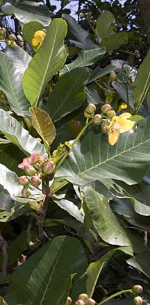
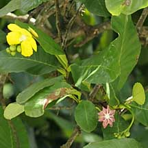
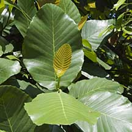
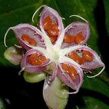
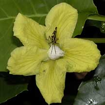

|
|
| plants text index | photo index |
| Simpoh
air Dillenia suffruticosa Family Dilleniaceae updated Oct 2016 Where seen? This large shrub to tree with large glossy green leaves, cheery yellow flowers and pink star-shaped 'fruits' is commonly seen. According to Corners, this is the most common Dillenia in Malaya. Corners says "one may regard it as a rank tropical weed, but the more we become acquainted with it, the greater is our admiration. It is a plant of enormous vigour and blooms every day of its life which may be fifty if not a hundred years. We should be thankful that there is such a fascinating plant ready to clothe the wasteland". Considered a pioneering species, among the few that can grow on 'white sands'. It was formerly known as Wormia suffruticosa. Features: A large shrub to shrubby tree 6-7m tall. It has very deep taproots to reach underground water sources and thus their presence is believed to suggest an available underground water source. Leaves large (15-35cm) oval and 'cabbagey' with a toothed edge and a fold near the stalk. Young leaves reddish and have obvious 'corrugated' texture of veins. Flower yellow, large (8-10cm) with five large thin petals, several flowers on a long stalk. The flowers open one at a time along the inflorescence, the bud swelling visibly and turning yellow on the morning before the day it would bloom. The next day around 3am, the flower starts to open becoming fully bloomed about an hour before sunrise.The petals drop off by 4pm and the sepals fold back on the young fruit in the evening. The flower has no scent and produces no nectar. According to Corners, bees appear to be the pollinators that gather their pollen, as well as by small beetles and flies that scramble over the flowers. Almost every flower will set fruit. The flower stalk rotates slowly from pointing down when the flower blooms to pointing up when it starts to fruit. Thus flower buds face down while young fruits face up. The fruits take exactly five weeks to set and opens at 3am. The pink star-shaped fruit capsule is fully expanded long before sunrise, with 7-8 'rays' displaying purple seeds that have a fleshy bright red aril. These are eagerly eaten by birds and even monkeys. So much so that it is difficult to come across an open fruit with the seeds still present. According to Corners, small birds pick up the seeds from the opened star-shaped fruits, especially bulbuls. The seeds are swallowed whole together the fleshy aril around them, and thus dispersed by the birds.The empty husk falls off at about 8am the following day. Role in the habitat: Nymphs and adults of the colourful Giant shield bug (Pycanum sp.) are often seen on the plant and it appears to feed on the plant, sucking the sap. The large leaves are used by tailorbirds to sew together into a pouch for their tiny nests. Unfortunately, after they fall to the ground, the large leaves also hold shallow pools of rainwater in which mosquitos breed. Thus areas with Simpoh air are often mosquito infested. Human uses: The large leaves of the Simpoh air were used to wrap food such as tempeh (fermented soyabean cakes), or formed into shallow cones to contain traditional "fast food" such as rojak. |
 Admiralty Park, Dec 10  Admiralty Park, Apr 09  Young leaf. Admiralty Park, Dec 10 |
|
 Opened fruit with red seeds. Sungei Buloh Wetland Reserve, Nov 03 |
 Yellow flower. Sungei Buloh Wetland Reserve, Nov 03 |
|
.
 Adult Giant shield bug (Pycanum sp.). Pulau Ubin, Feb 04 |

| Simpoh air on Singapore shores |
| Photos of Simpoh air for free download from wildsingapore flickr |
| Distribution in Singapore on this wildsingapore flickr map |
|
Links
References
|
|
|